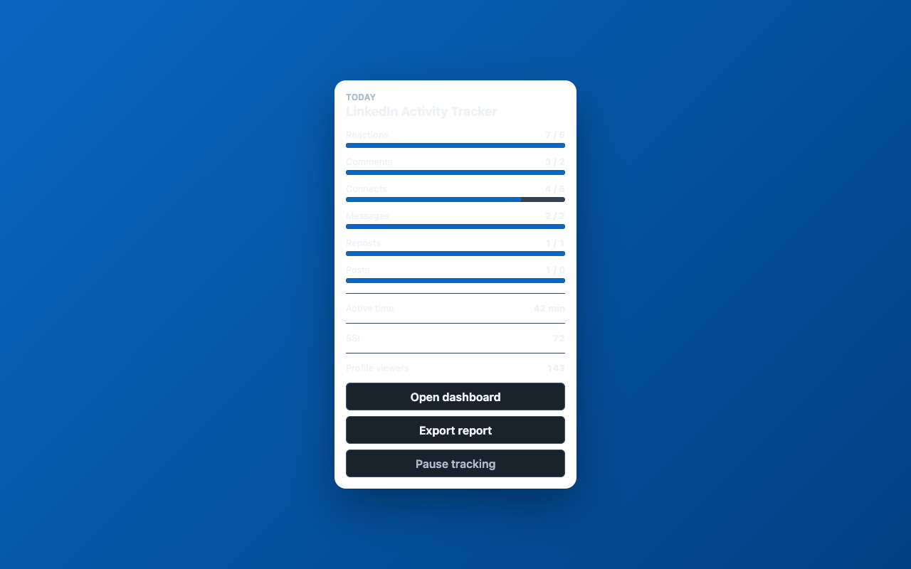
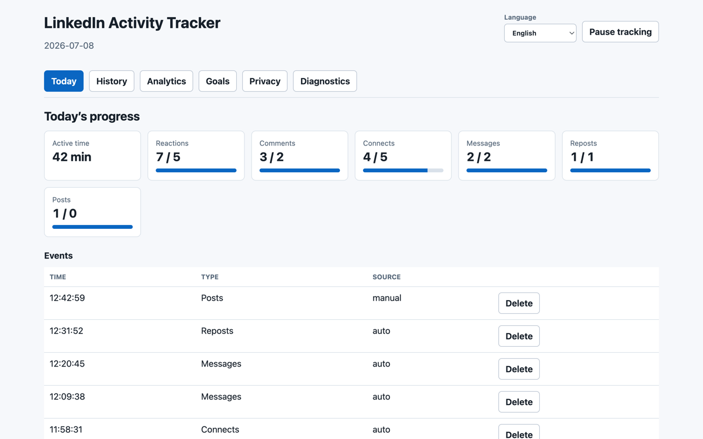
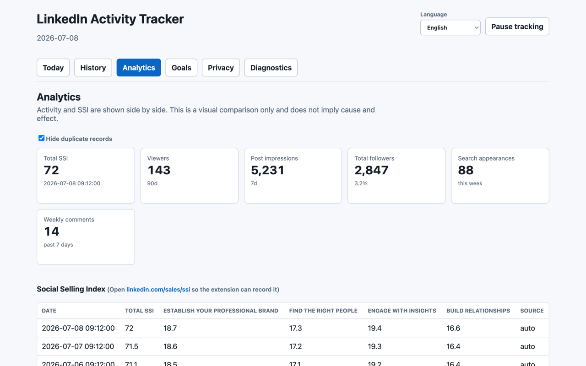

Privacy-first · Local only
A Chrome extension that passively logs your own LinkedIn activity — reactions, comments, connections, posts, active time — into one local dashboard. No automation. No account. Nothing leaves your device.

LinkedIn scatters your signals across a dozen pages. This brings them together — without sending anything anywhere.
Reactions, comments, replies, connection requests, messages, reposts, and posts you make yourself.
Set a daily target for each activity and watch your progress fill up in real time.
SSI, profile viewers, impressions, followers and search appearances captured when you open those pages.
A clean day-by-day table so you can see whether your routine is actually moving.
Export everything as JSON, CSV, or Markdown at any time. It’s yours.
The whole point is to measure your effort without becoming another thing that watches you.
All data lives in chrome.storage.local. No server, no account, no cloud sync.
It never clicks, types, scrolls, or submits anything on LinkedIn for you.
The text of your messages, comments, and posts is never recorded.
Every line is public on GitHub. Read exactly what it does before you trust it.
A fast popup for today, a full dashboard for the bigger picture.


Add it from the Chrome Web Store — no signup, no configuration.
Keep doing what you do. The extension quietly counts the actions you take yourself.
Open the popup for today or the dashboard for history, analytics, and goals.
Free, open source, and everything stays on your device.